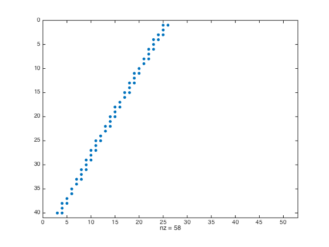

clc
clear all
G=6.67*10^(-12);
Mz=5.976*10^24;
T=2*pi*(6871200^1.5)/(G*Mz)^0.5;
f=1/T*360;
sat=14:f:15.5;
Sat=sat*pi/180;
Rs=6871.2;
rec=14.6:0.02:14.9;
rec=sort(rec);
Rec=rec*pi/180;
Rr=6371.2;
dw=0.0288;
Hight=(Rr+100):10:(Rr+500);
Lat=14:dw:15.5;
M=length(rec)*length(Sat);
N=(length(Hight)-1)*(length(Lat)-1);
LMN=zeros(M,N);
jm=1;
for i=1:length(sat);
for j=1:length(rec);
R=[];
k=(Rs*sin(Sat(i))-Rr*sin(Rec(j)))/(Rs*cos(Sat(i))-Rr*cos(Rec(j)));
radial=sqrt(Rs^2+Rr^2-2*Rs*Rr*cos(Sat(i)-Rec(j)));
alfa=acos((Rs^2+radial^2-Rr^2)/(2*Rs*radial));
if sat(i)>=rec(j)
sita1=ceil(rec(j)/dw);
sita1=sita1*dw;
sita2=floor(sat(i)/dw);
sita2=sita2*dw;
sita=sita1:dw:sita2;
sita=sort(sita,'descend');
Sita=sita*pi/180;
Sita=sort(Sita,'descend');
for q=1:length(sita)
R(q)=(k*Rr*cos(Rec(j))-Rr*sin(Rec(j)))/(k*cos(Sita(q))-sin(Sita(q)));
R=R(R>Hight(1));
end
for r=1:length(Hight)
gama(r)=asin(sin(alfa)*Rs/Hight(r));
gama=gama*180/pi;
sitaz(r)=alfa*180/pi-gama(r)+sat(i);
end
else
sita1=floor(rec(j)/dw);
sita1=sita1*dw;
sita2=ceil(sat(i)/dw);
sita2=sita2*dw;
sita=sita2:dw:sita1;
sita=sort(sita,'descend');
Sita=sita*pi/180;
Sita=sort(Sita,'descend');
for q=1:length(sita)
R(q)=(k*Rr*cos(Rec(j))-Rr*sin(Rec(j)))/(k*cos(Sita(q))-sin(Sita(q)));
end
R=R(R>Hight(1));
for r=1:length(Hight)
gama(r)=asin(sin(alfa)*Rs/Hight(r));
gama(r)=gama(r)*180/pi;
sitaz(r)=gama(r)-alfa*180/pi+sat(i);
end
end
sitau=union(sita,sitaz);
sitau=sort(sitau);
if sat(i)>=rec(j)
sitau=sitau(sitau>=sitaz(1));
else
sitau=sitau(sitau<=sitaz(1));
end
tmp=diff(sitau);
for l=i:length(tmp)
if tmp(l)<1e-10
sitau(l)=[];
end
end
if sat(i)>=rec(j)
sitau=sort(sitau) ;
else
sitau=sort(sitau,'descend') ;
end
Sitau=sitau*pi/180;
Ru=union(R,Hight);
Ru=sort(Ru);
for t=1:length(Sitau)-1
L=(Ru(t+1)*sin(Sitau(t+1))-Ru(t)*sin(Sitau(t)))^2+(Ru(t+1)*cos(Sitau(t+1))-Ru(t)*cos(Sitau(t)))^2;
L=sqrt(L);
m=floor((Ru(t)-Hight(1))/10)+1;
tmp=(sitau(t)-Lat(1))/dw;
if mod(tmp,1)==0
if sat(i)>=rec(j)
n=floor((sitau(t)-Lat(1))/dw)+1;
else
n=floor((sitau(t)-Lat(1))/dw);
end
else
n=floor((sitau(t)-Lat(1))/dw)+1;
end
jn=((n-1)*(length(Hight)-1)+m);
LMN(jm,jn)=L;
end
jm=jm+1;
end
end
tu=LMN(80,:);
tu=reshape(tu,40,52);
spy(tu)
save('xishu.mat','LMN');
